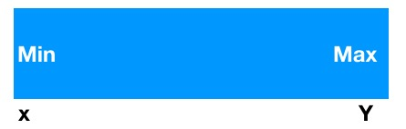
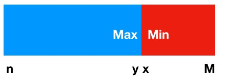
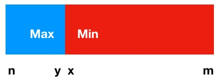

LeetCode-33-Search in rotated sorted array
2019/01/11 00:00 · By vran
题意
假设有一个按升序排列的数组， 现在将其从中间某个位置（未知）将其分成两部分，并交换位置
原数组：[0,1,3,5,6,7,8]
将其分为两部分，索引<4 算一部分， 剩余的为第二部分
将其旋转后得到
[6,7,8,0,1,3,5]
现在你需要在这个旋转后的数组种找寻是否有输入的一个目标值， 如果有就返回它在数组中的索引位置，否则返回-1.
约束条件：
- 数组中的值都是不重复的
- 算法的时间复杂度必须是O(logN)
思路
注意理解两个约束条件（很重要）， 第二个条件要求时间复杂度必须是O(logN), 而在数组查找问题中看见O(logN)我们一般会想到二分查找法（又叫折半查找法）
但是二分查找要求整个输入必须是有序的， 而我们这个输入明显不符合要求。
二分查找一次排除一半的结果集，这是因为能确定结果不在其中，根据这个思路我们还是有希望用二分查找解决这个问题的。
但是我们得先分析旋转后的数组情况， 以便找出一定的规律每次去排除一半的结果集
首先根据题意， 我们得知输入数组最开始是升序的， 只不过要经历一次旋转， 而旋转的位置是未知的。
如果我们给定的旋转位置比0还小的话， 这样数组就不会变化，结构如下图，即 x~y 为升序, 这种情况用正常的二分查找就能解决问题了。

分析
如果给定的旋转位置>=0并且合法，那么数组会被我们分成A,B两部分， 这就会存在以下两种情况
- A.length > B.length
- A.length <= B.length
下面用图来说明这两种情况， 在图中蓝色区域为A, 红色区域为B
先看第一种情况: A.length > B.length
这种情况下
x < m, n < y, m < n, x < y;

这种情况下使用二分查找计算得到的中间位置midle就落在蓝色区域内
如果 array[midle] < target : 红色部分肯定小于array[midle] , 而midle～y为升序， 我们就能确定值在 middle + 1 ~ y之间
如果array[midle] > target : 红色部分肯定小于array[midle], 并且array[n] ~ array[midle-1] 也小于array[midle], 那么target 就可能在 n ~ midle 或x ~ m之间
如果 array[midle] == target : 直接返回midle就可以了
再看第二种情况：A.length <= B.length (我们把A.length == B.length算作同一种情况)
这种情况下数据大小关系和上面是一样的：
x < m, n < y, m < n, x < y;

这种情况下使用二分查找计算得到的中间位置midle就落在红色区域内，下面的分析就和第一种情况类似了
如果 array[midle] < target : 蓝色部分大于 array[midle], 并且array[midle + 1] ~ array[m] 也大于 array[midle], 所以target就在 midle + 1 ~ m 或 n ~ y之间
如果 array[midle] > target : 蓝色部分大于array[midle], 那么target 就只可能在 x ~ midle 之间
如果 array[midle] == target : 直接返回midle
解题
public Class Solution {
public int search(int[] nums, int target) {
// 输入校验
if (nums == null || nums.length == 0) return -1;
// 二分查找
int l = 0, r = nums.length - 1;
while (l <= r) {
int m = (r - l)/2 + l;
if (target > nums[m]) {
if (nums[l] < nums[r]) {
l = m + 1;
} else {
// A.length < B.length
if (nums[m] < nums[r]) {
if (target > nums[r]) {
r = m - 1;
} else if(target < nums[r]) {
l = m + 1;
} else {
return r;
}
}
// A.length >= B.length
else {
l = m + 1;
}
}
} else if (target < nums[m]) {
if (nums[l] < nums[r]) {
r = m - 1;
} else {
// A.length < B.length
if (nums[m] < nums[r]) {
r = m - 1;
}
// A.length >= B.length
else {
if (target > nums[l]) {
r = m - 1;
} else if(target < nums[l]) {
l = m + 1;
} else {
return l;
}
}
}
} else {
return m;
}
}
// 未找到值
return -1;
}
}